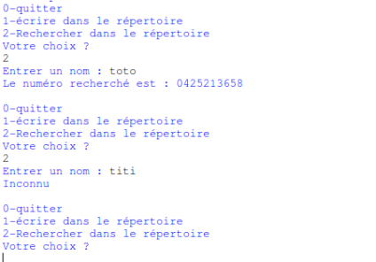

Mini-projet "Création d'un répertoire téléphonique"
Cette dernière activité vous permettra de réinvestir tout ce que vous avez appris au cours des 12 premières activités. Vous allez essayer d'écrire un programme un peu plus complexe que ceux que vous avez déjà réalisés : un répertoire téléphonique.
Avant de s'intéresser au mini projet proprement dit, il nous reste quelques notions à voir :
Écrire et lire dans un fichier externe
Il est possible de lire ou d'écrire des données dans un fichier extérieur (par exemple dans un fichier de type texte).
La première des choses à faire est d'ouvrir notre fichier texte. Pour ce faire nous utiliserons la méthode open (nous verrons la notion de méthode plus tard, dans une autre série d'activités. Vous avez juste besoin de savoir qu'une méthode "ressemble" beaucoup à une fonction).
monFichier = open(nomdufichier, mode d'ouverture)
N. B. : On pourrait penser que monFichier est une variable, en fait, c'est un peu plus compliqué que cela : monFichier est un objet. Pour manipuler notre fichier texte, il suffira de manipuler l'objet monFichier.
Il existe 3 modes d'ouverture :
- 'r ' : ouverture en lecture
- 'w' : ouverture en écriture. Le contenu du fichier est écrasé. Si le fichier n'existe pas, il est créé.
- 'a' : ouverture en écriture en mode ajout. On écrit à la fin du fichier sans écraser l'ancien contenu du fichier. Si le fichier n'existe pas, il est créé.
Une fois le fichier ouvert, il est possible d'écrire dedans (à l'aide de write) ou de lire son contenu (à l'aide de read). Une fois terminée, il ne faudra pas oublier de « fermer » le fichier en utilisant la méthode close.
À faire vous-même 13.1
Étudier et tester le programme suivant :
nom=input('Entrez un mot')
monFichier=open('fichier.txt','a')
monFichier.write(nom)
monFichier.close()
print('fichier enregistré')
Le répertoire (dossier) courant devrait maintenant contenir aussi un fichier « fichier.txt ». Ouvrir ce fichier (avec un éditeur de texte) et vérifier qu'il contient bien le mot entré par l'utilisateur.
À faire vous-même 13.2
Étudier et tester le programme suivant :
monFichier=open('fichier.txt','r')
contenu=monFichier.read()
monFichier.close()
print(contenu)
Quel est le résultat attendu après l'exécution de ce programme ? Vérifier votre réponse.
À faire vous-même 13.3
Écrire un programme permettant à l'utilisateur de sauvegarder 5 noms dans un fichier texte (fichier.txt)
Vérifier que votre programme est correct en ouvrant le fichier «fichier.txt» à l'aide d'un éditeur de texte.
Votre fichier texte devrait être illisible (les mots s'enchaînent sans aucun espace ou saut à la ligne). Il est tout à fait possible de « forcer » le saut de ligne en utilisant la suite de caractères suivante: \n (l'enchaînement des caractères \ et n entraîne un « retour chariot »). L'instruction suivante :
print('hello \n world')
n'affiche pas : hello \n world
mais
hello
world
Nous avons bien un saut de ligne (un « retour chariot »). Le caractère \n n'est pas affiché.
À faire vous-même 13.4
Modifier votre programme du "À faire vous-même 13.3" afin d'avoir un nom par ligne dans le fichier texte (fichier.txt).
À faire vous-même 13.5
Voici un programme permettant de lire le fichier texte et de ranger les différents noms entrés par l'utilisateur dans une liste :
fichier=open('fichier.txt','r')
nom=[]
for ligne in fichier:
ligne=ligne.strip('\n')
nom.append(ligne)
print ('opération terminée')
NB : la ligne «ligne=ligne.strip('\n')» permet d'enlever la suite de caractères \n, car même si \n n'est pas visible dans le fichier texte, elle est tout de même présente. Il faut donc modifier ce programme afin qu'il permette d'afficher à l'écran les noms qui étaient contenus dans le fichier texte.
Modifiez le programme ci-dessus afin qu'il affiche les noms contenus dans le fichier 'fichier.txt'
Commenter son code
Afin de rendre votre programme plus clair, il est nécessaire, dès que votre code dépasse une dizaine de lignes, d'introduire des commentaires. Bien sûr cela peut permettre à une personne qui n'a pas écrit le programme de comprendre ce que vous avez voulu faire, mais cela peut aussi vous permettre, quelques mois après avoir terminé d'écrire votre code, de vous "rafraîchir la mémoire".
En Python, toute ligne commençant par la caractère dièse (#) sera considérée comme un commentaire par le système interpréteur/compilateur.
Voici un exemple de programme commenté :
# la fonction monMessage permet d'afficher un message
#****************début de la fonction monMessage******************
def monMessage(nom):
print ("Bonjour "+nom)
#****************fin de la fonction monMessage********************
# interrogation de l'utilisateur (en Python 3.X l'instruction raw_input devra être remplacée par input)
monNom=input("Quel est votre nom ?\n")
# appel de la fonction monMessage
monMessage(monNom)
Attention, dans l'exemple ci-dessus j'ai volontairement alourdi le programme avec des commentaires inutiles vu la simplicité de ce dernier.
Mini-projet
En utilisant les connaissances acquises jusqu'à présent, vous allez écrire un programme de gestion de répertoire téléphonique.
Cahier des charges
Ce programme devra proposer le menu suivant à l'utilisateur :
0-quitter
1-écrire dans le répertoire
2-rechercher dans le répertoire
Votre choix ?
Si le choix est 0 : Le programme sera stoppé.
Si le choix est 1 :
L'utilisateur devra saisir un nom ou 0 s'il veut terminer la saisie (« Nom (0 pour terminer) : ») :
- L'utilisateur entre 0 => le programme devra le renvoyer vers le menu
- L'utilisateur entre un nom => le programme devra lui demander de saisir le numéro de téléphone correspondant au nom. Une fois le numéro saisi, le programme devra lui proposer d'entrer un nouveau nom (ou 0 pour terminer)...

Si le choix est 2 :
L'utilisateur devra saisir le nom recherché (« Entrer un nom : »).
- Si le nom recherché est présent dans le répertoire, le programme devra afficher « Le numéro recherché est : » suivi du numéro de téléphone correspondant au nom saisi.
- Si le nom recherché est absent du répertoire, le programme devra afficher « Inconnu ».
L'utilisateur est ensuite redirigé vers le menu principal.
Les noms et numéros de téléphone devront être stockés dans un fichier texte.
Votre programme devra être composé de 3 fonctions : une fonction « menu », une fonction « lecture » et une fonction « ecriture ».